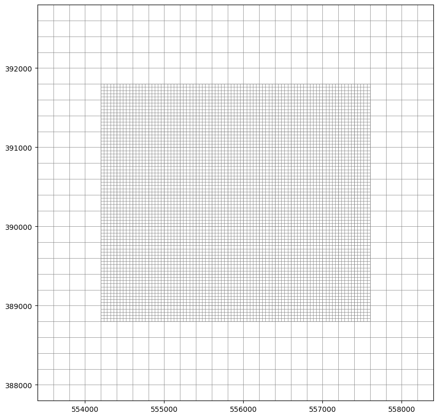

Local grid refinement¶
In MODFLOW 6, two groundwater models can be tightly coupled in the same simulation, which allows for efficient “local grid refinement” (LGR; Mehl and others, 2006) and “semistructured” (Feinstein and others, 2016) configurations that combine multiple structured model layers at different resolutions (Langevin and others, 2017). Locally refined areas are conceptualized as separate “child” models that are linked to the surrounding (usually coarser) “parent” model through the GWF Model Exchange (GWFGWF) Package. Similarly, “semistructured” configurations are represented by multiple linked models for each layer or group of layers with the same resolution.
Modflow-setup supports local grid refinment via an lgr: subblock within the setup_grid: block of the configuration file. The lgr: subblock consists of one of more subblocks, each keyed by a linked model name and containing configuration input for that linked model. Vertical layer refinement relative to the “parent” model is also specified for each layer of the parent model.
For example, the following “parent” configuration for the Pleasant Lake Example creates a local refinement model named “pleasant_lgr_inset” that spans all layers of the parent model, at the same vertical resolution (1 inset model layer per parent model layer).
lgr:
pleasant_lgr_inset:
filename: 'pleasant_lgr_inset.yml'
# number of inset layers for each parent layer
# this can be an integer (vertically uniform refinement)
# a list (with an entry for each parent layer)
# or a dictionary (with entries for each parent layer that is refined;
# unlisted layers will default to zero)
layer_refinement: [1, 1, 1, 1, 1] # number of lgr model layers per parent model layer
The horizontal location and resolution of the inset model are specified in the inset model configuration file, in the same way that they are specified for any model. In this example, the parent model has a uniform horizontal resolution of 200 meters, and the inset a uniform resolution of 40 meters (a horizontal refinement of 5 inset model cells per parent model cells). The inset model resolution must be a factor of the parent model resolution.
{kind=link}
{kind=link}
Input from the lgr: subblock and the inset model configuration file(s) is passed to the Flopy Lgr Utility, which helps create input for the GWF Model Exchange Package.
Within the context of a Python session, inset model information is stored in a dictionary under an inset attribute attached to the parent model. For example, to access a Flopy model object for the above inset model from a parent model named model:
inset_model = model.inset['pleasant_lgr_inset']
Specification of vertical refinement¶
Vertical refinement in the LGR child grid is specified in the layer_refinement: item, as the number of child layers in each parent model layer. Currently vertical refinement is limited to even subdivision of parent model layers. Vertical refinement can be specified as an integer for uniform refinement across all parent model layers:
layer_refinement: 1
a list with an entry for each parent layer:
layer_refinement: [1, 1, 1, 0, 0]
or a dictionary with entries for each parent layer that is refined:
layer_refinement:
0:1
1:1
2:1
Parent model layers with 0 specified refinement are excluded from the child model. The list and dictionary inputs above are equivalent, as unlisted layers in the dictionary are assigned default refinement values of 0. Refinement values > 1 result in even subdivision of the parent layers. Similar to one-way coupled inset models, LGR child model layers surfaces can be discretized at the finer child resolution from the original source data. In the example below, a 9-layer child model is set within the top 4 layers of a 5 layer parent model. The parent model lgr: configuration block is specified as:
lgr:
pleasant_lgr_inset:
filename: 'pleasant_vertical_lgr_inset.yml'
# number of inset layers for each parent layer
# this can be an integer (vertically uniform refinement)
# a list (with an entry for each parent layer)
# or a dictionary (with entries for each parent layer that is refined;
# unlisted layers will default to zero)
layer_refinement: [2, 2, 2, 3, 0]
In the child model dis: configuration block, raster surfaces that were used to define the parent model layer bottoms are specified at their respective desired locations within the child model grid; Modflow-setup then subdivides these to create the desired layer configuration. The layer specification in the child model dis: block must be consistent with the layer_refinement: input in the parent model configuration (see below). The image below shows
dis:
options:
length_units: 'meters'
dimensions:
# nrow and ncol are based on the buffer distance and grid spacing
nlay: 9
source_data:
top:
filename: '../../../examples/data/pleasant/source_data/rasters/dem40m.tif' # DEM file; path relative to setup script
elevation_units: 'meters'
botm:
filenames:
# bottom of layer 0 set halfway between layer 1 bottom and model top (layer_refinement[0] == 2)
1: '../../../examples/data/pleasant/source_data/rasters/botm0.tif' # preprocessed surface for parent model layer 0 bottom
# bottom of layer 2 set halfway between layers 1 and 3 (layer_refinement[1] == 2)
3: '../../../examples/data/pleasant/source_data/rasters/botm1.tif' # preprocessed surface for parent model layer 1 bottom
# bottom of layer 4 set halfway between layers 3 and 5 (layer_refinement[2] == 2)
5: '../../../examples/data/pleasant/source_data/rasters/botm2.tif' # preprocessed surface for parent model layer 2 bottom
# bottoms of layers 6 and 7 equally subdivide layers 5 and 8 (layer_refinement[3] == 3)
# bottom of layer 8 set from parent model layer 3 bottom
The figure below shows a cross section through the model grid resulting from this configuration:
{kind=link}
A few notes about LGR functionality in Modflow-setup
Locally refined “inset” models must be aligned with the parent model grid, which also means that their horizontal resolution must be a factor of the “parent” model resolution. Modflow-setup handles the alignment automatically by “snapping” inset model grids to the lower left corner of the parent cell containing the lower left corner of the inset model grid (the inset model origin in real-world coordinates).
Similarly, inset models need to align vertically with the parent model layers. Parent layers can be subdivided using values > 1 in the
layer_refinement:input option.Specifically, the layer specification in the child model
dis:block must be consistent with thelayer_refinement:input in the parent model configuration. For example, if alayer_refinementof3is specified for the last parent layer included in the child model domain, then the last two raster surfaces specified in the child modeldis: block must be specified with two layer bottoms in between. Similarly, the values inlayer_refinement:in the parent model configuration must sum tonlay:specified in the child modeldis:configuration block.Regardless of the supplied input, the child model bottom and parent model tops are aligned to remove any vertical gaps or overlap in the numerical model grid. If a raster surface is supplied for the child model bottom, the child bottom/parent top surface is based on the mean bottom elevations sampled to the child cells within each parent cell area.
Child model
layer_refinement:must start at the top of the parent model, and include a contiguous sequence of parent model layers.Multiple inset models at different horizontal locations, and even inset models within inset models should be achievable, but have not been tested.
Multi-model configurations come with costs. Each model within a MODFLOW 6 simulation carries its own set of files, including external text array and list input files to packages. As with a single model, when using the automated parameterization functionality in pyEMU, the number of files is multiplied. At some point, at may be more efficient to work with individual models, and design the grids in such a way that boundary conditions along the model perimeters have a minimal impact on the predictions of interest.